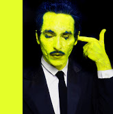
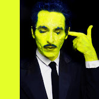

Antonio Culebras
Artista y Coach.
Sobre mí
Mi experiencia vital y mi formación me han llevado a crear una carrera profesional en dos áreas diferenciadas pero complementarias: el arte y el coaching. Mi participación en diferentes proyectos musicales y mis acciones creativas (fotografía, vídeo, diseño, performance art, entre otros) me han servido para aprender una serie de pautas de expresión corporal, de conductas y comportamientos que aplico después en el proceso del bienestar de la persona y de la sociedad. Para mi las complicaciones son nuevos retos. De todas las vivencias que he tenido, tanto positivas como negativas, he aprendido a sacarle su lado más constructivo.El arte es terapéutico y la terapia es creativa.
About me
My lifeexperience and my training have led me intocreating a unique style on my professionalcareer that I have divided in two complementaryareas : art and coaching. My participation in various musical projects and my creative skills, ( photography, video, design, different art performance, amongothers) have help me to learn and explore different patterns in corporal expression, behaviours that I haveapplied to sustain and help the process of the welfare of an individual and society. Personally, I believeobstaclesoffer an opportunity to learn and grow. From every single experience I had, both positive and negative, I havelearned to takeitsmostconstructivepart. Art is therapeutic and therapysustains the ability to be creative.
Coaching
Mi labor como Coach Social consiste en acompañar a personas y grupos que tienen la inquietud de trabajar, cambiar o indagar en algún aspecto concreto de sus vidas. La clave fundamental del Coaching Ontológico consiste en la subjetividad de lo que nos rodea y de las diferentes interpretaciones en función de cada persona. En su base, no parte de la búsqueda de la verdad sino en las diferentes vías de convivencia que se abren cuando la visión se enfoca en una perspectiva u otra. Otro recurso es la meditación, un proceso de auto-curación mediante la auto-observación . Otra herramienta válida para conectar directamente con la parte emocional es la aromaterapia y la música. El binomio música/oído y olfato/fragancias ayudan atransformar la energía y los estado de ánimo.
My job as a Social Coach is to lead and guide people and groups that come to me with different types of blocks and concernsaroundtheircareers, or simplythey are lookingintochanging or investigate a particular aspect of theirlives. The fundamental key of OntologicalCoachingconsist in the subjectivity of whatsurrounds us is not part of the search for truth, but in different ways of coexistence that opens up the vision that focuses on one perspective or another. Anotherresource that I use is meditation, a process of self healingthrough self observation and self awareness. Anothervalid tool to content directly with the emotional is througharomatherapy and music. The binomial music/hearing and smell/fragrances help to transformenergy and mood.
Coaching para Adolescentes. Taller de Desarrollo Personal. TallerRelaciones Sanas. TallerArte Medicina. Coaching de equipos. Coaching individual. Taller Prevención Comportamientos y Conductas de Riesgo. Taller de Silencio. Taller de Meditación y Mirada Interior. Taller Gestión Emocional. Taller Inteligencia Familiar. Taller deMáscaras. Taller de Autoestima.
Coaching for teenagers. Personal Development Workshop. Healthy Relations Workshop. Medicine Art Workshop. TeamCoaching. Individual Coaching. PreventioninRiskBehaviorsWorkshop. SilenceWorkshop. Meditation and Interior Look Workshop. Emotional Management Workshop. Family IntelligenceWorkshop. MasksWorkshop. Self-esteemWorkshop.
Adicciones / Addictions


Adicciones
Mi labor en adicciones la realizo bajo el prisma de mi experiencia y mediante mi formación en Conductas y Comportamientos adictivos del Método Minnesota, en Intervención Familiar, CounselorySober Coach. Este método está basado en el programa de Doce Pasos, un programa de recuperación adaptado a los centros de tratamiento. En mi faceta como Intervencionista Familiar trabajo en el núcleo doméstico. Mi especialización son las prevenciones, conductas de riesgo y la información en jóvenes y adolescentes y la psicoeducaciónde sus familias. Otra de mis funciones es acompañar y hacer un seguimiento de las personas que han parado su consumo y siguen un proceso de recuperación, cambiando conductas y comportamientos. Cuando hablamos de Adicciones no es solo el consumo de drogas y alcohol sino a conductas y comportamientos como el sexo, juego, redes sociales, trabajo, compras o dependencia en relaciones de pareja entre otros.
Addictions
My work in addictions was made throughout the prism of my personal experiencecombined with my training in Addictive Behaviours of the Minnesota Method, alsotrained for Family Intervention, Counsellor and SoberCouch. This method is based on The TwelveStep, a recovery program adapted to the Rehabilitation Centres. My role as a Family Interventionist it is mainly focus in the domestic nucleus. I am specialised in prevention, risk behaviour and the information of young people and adolescents and the psychoeducation of their families. Another of my responsibilities is the following up of the individuals that have stopped their drug/alcohol use and support them in their recovery process and the change of old behaviours and patterns. When we talk about addictions I do not justfocus on substances and alcohol, I observe and look out for other addictive patterns such as sex, gambling, social networks, shopping or anykind of dependency on relationships between others such as work, family etc.
Arte / Art
 


Arte
Me considero un artista multidisciplinar. Aunque estudié Dirección de Documentales y Video Arte, mi formación y evolución ha sido siempre autodidacta y espontanea. La creatividad forma parte de mi vida tanto a nivel personal como profesional. La perfomance, como acción artística, es la cuna de mi desarrollo como artista. Desde aquí he probado, trabajado y desarrollado diferentes proyectos con o sin guion. Arte visual, música, artes plásticas, moda, escenografía, poesía... son algunas de las disciplinas que he tratado. Mi último reto ha sido estudiar en el Instituto de Marina Abramovic para profundizar en su método. Considero que el arte y la terapia se sostienen y se retroalimentan por lo que el arte suele estar muy presente en mis trabajos de coaching. El Arte como medicina.
Art
I considermyself a multidisciplinaryartist. Although I studiedDocumentary and Video Art Direction, my training and evolution has alwaysbeenself-taught and spontaneous. Creativity is part of my lifebothpersonally and professionally. The perfomance, as an artisticaction, is the cradle of my development as an artist. From here I havetested, worked and developed different projects with or without a script. Visual art, music, plasticarts, fashion, scenography, poetry ... are some of the disciplines I havedealt with. My lastchallenge has been to study at the Marine Institute Abramovic to deepentheirmethod. I believe that art and therapy are sustained and fed back so that art is oftenpresent in my coachingwork. Art as medicine.
Diseño / Design
Diseño
Mis proyectos de Artes Plásticas se han ramificado también al ámbito de la decoración y el interiorismo. Las técnicas que utilizo son principalmente, la fotografía, objetos decorativos cuidadosamente intervenidos y el collage. Diseños bajo el nombre de Le Group Object y piezas exclusivas cristalizadas con cristales de Swarovski, iniciativa con la colaboración de Ateliero.
Design
My Plastic Arts projectshavealsobranchedinto the field of decoration and interior design. The techniques I use are mainlyphotography, carefullyinterveneddecorative objects and collage. Designs under the name of Le Group Object and exclusive piecescrystallized with Swarovski crystals, initiative with the collaboration of Ateliero.
Música / Music


Música
Vocalista en Glamour to Kill, un exitoso grupo de electro rock afincado en Berlín con varios discos publicados y múltiples conciertos por Europa.
EmotionalNarcotic Orchestra (ENO), un proyecto breve pero intenso, donde la música orquestal fue la protagonista.
Le Group es un proyecto contemporáneo abierto a colaboraciones con diferentes artistas y en encuentros que pueden durar en el tiempo o ser efímeros y vivir solo un momento creativo irrepetible. El sonido de Le Group es multisonoro, un espacioexperimental.
Music
Vocalist in Glamor to Kill, a successful electro rock groupbased in Berlin with severalalbums and multipleconcerts in Europe.
EmotionalNarcotic Orchestra (ENO), a briefbut intense project, whereorchestral music was the protagonist.
Le Group is a contemporary project open to collaborations with different artists and in meetings that can last in time or be ephemeral and live only an unrepeatable creative moment. The sound of Le Group is multi-sound, an experimental space.
Contacto / Contact
Madrid, España
Email: mail@mail.com
Si lo prefiere, puede mandar un mensaje:
Send me a message: